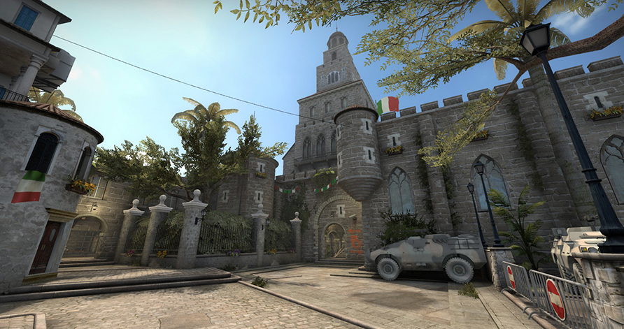
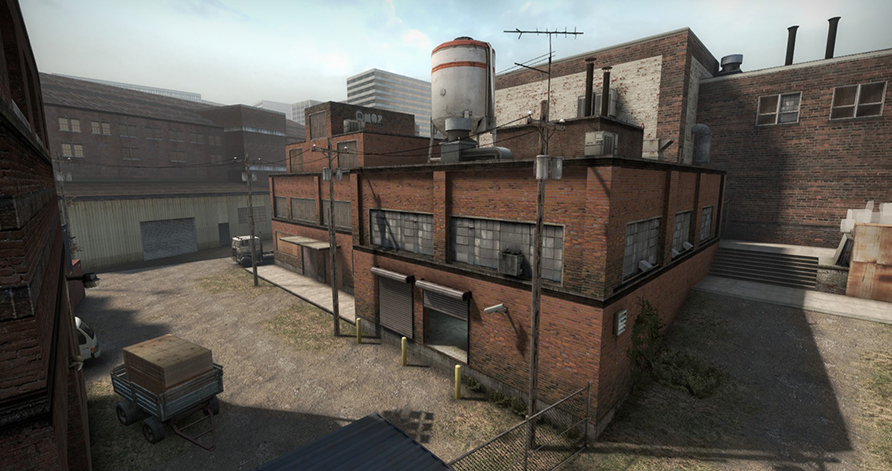
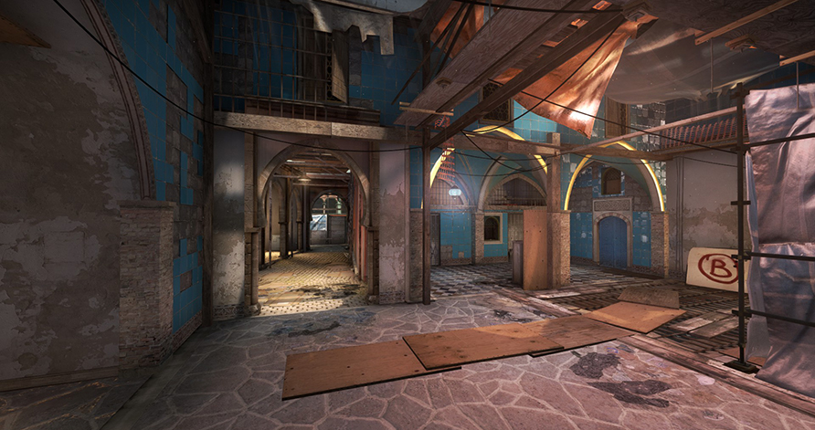
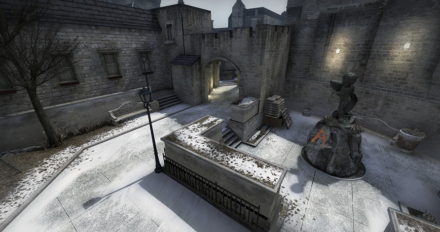
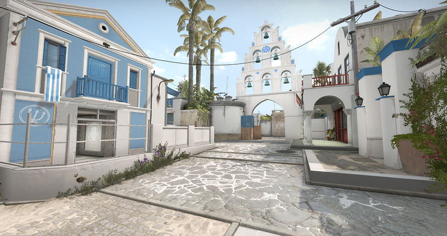
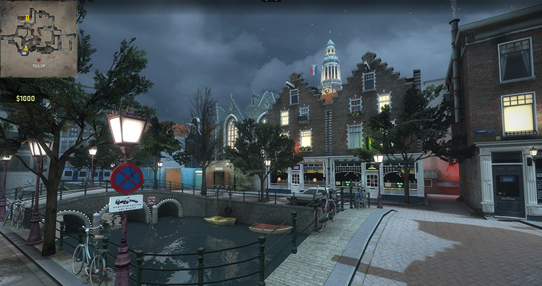

Bomb defusal maps in opperation Wildfire
Coast
Coast (de_coast) is a custom bomb defusal map featured in Counter-Strike: Global Offensive's Operation Wildfire. On the October 13, 2016 Update, the map was removed from the game files, making Coast inaccessible via console.
Empire
Empire (de_empire) is a custom bomb defusal map featured in Counter-Strike: Global Offensive's Operation Wildfire. On the October 13, 2016 Update, the map was removed from the game files, making Empire inaccessible via console.
Mikla
Mikla (de_mikla) is a custom bomb defusal map featured in Counter-Strike: Global Offensive's Operation Wildfire. On the October 13, 2016 Update, the map was removed from the game files, making Mikla inaccessible via console.
Royal
Royal (de_royal) is a custom bomb defusal map set in Edinburgh, Scotland. The map was featured in Counter-Strike: Global Offensive's Operation Wildfire. On the October 13, 2016 Update, the map was removed from the game files, making Royal inaccessible via console.
Santorini
Santorini (de_santorini) is a custom bomb defusal map featured in Counter-Strike: Global Offensive's Operation Wildfire. It was designed by FMPONE, Dreamsane, Hordeau and Rf. On the October 13, 2016 Update, the map was removed from the game files, making Santorini inaccessible via console. A map also named Santorini appears in Counter-Strike Online. However, the two maps are completely unrelated, featuring completely different layouts.
Tulip
Tulip (de_tulip) is a custom bomb defusal map featured in Counter-Strike: Global Offensive's Operation Wildfire. On the October 13, 2016 Update, the map was removed from the game files, making Tulip inaccessible via console.